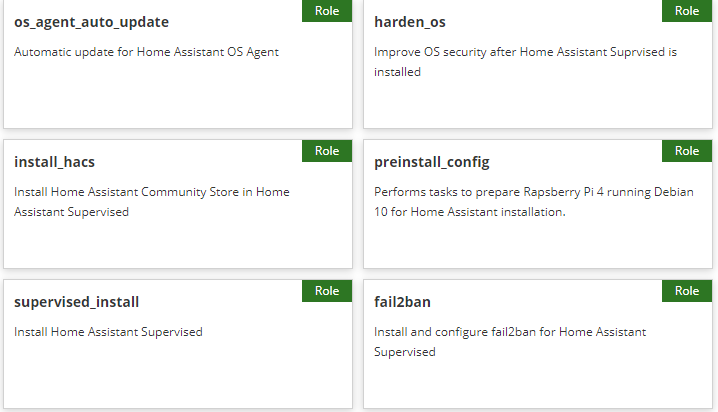

Ansible Collection for Home Assistant

Install, configure, and secure Home Assistant
on a Raspberry Pi running Debian.
Technology
Ansible Collection for Home Assistant includes 6 Ansible roles to automate server
provisioning
according to the strict requirements for a supported Home Assistant
installation.
The collection further enhances the basic install by setting up
automatic Debian security updates using unattended-upgrades
and configuring fail2ban to block unauthorized remote login attempts.
A GitHub Actions workflow lints and tests new releases of Home
Assistant Collection before publishing to Ansible Galaxy.